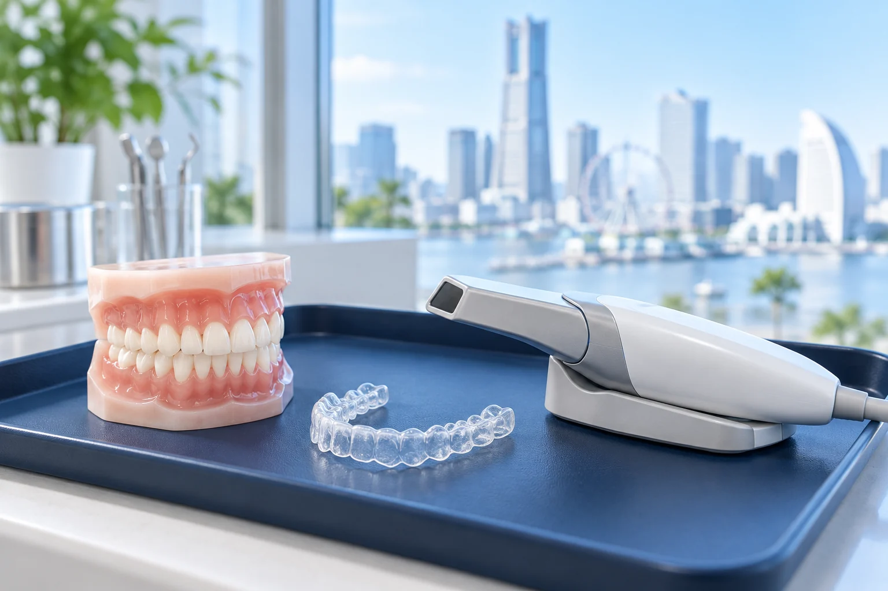

マウスピースで
治せるかどうかを、
最初に正直に。
矯正歯科の認定医が、歯並び・かみ合わせ・骨格を検査してから、マウスピースが向いているかを判断します。向いていない場合は、その理由もお伝えします。
日本矯正歯科学会の認定医 2名が在籍／開院7年
マウスピース矯正、向いているかも？
30秒セルフチェック
Q1. 気になるのは前歯の見た目が中心ですか？
Q2. 奥歯でしっかり噛めていますか？
Q3. 1日20時間以上、マウスピースを着けられそうですか？
Q4. 出っ歯・受け口など、あごの位置が気になりますか？
Q5. 過去に矯正をして、後戻りしましたか？
「できない」と言うことも、
専門医の役割です。
マウスピース矯正は便利な方法ですが、すべての歯並びに向いているわけではありません。当院では、検査の結果を見てから方法を決めます。
- 日本矯正歯科学会の認定医が、検査・診断・治療計画を担当
- マウスピースが難しい場合は、ワイヤー（裏側を含む）や併用を提案
- 費用は最初に総額で提示。調整料・保定装置まで含みます
- 平日21時まで・土日も診療。お仕事帰りに通えます
※写真はイメージです
費用は、総額で最初にお伝えします
マウスピース矯正（全体）
- 検査・診断料、調整料、保定装置を含む
- 治療期間の目安：1年半〜2年半
- デンタルローン 月8,000円台〜
マウスピース矯正（部分）
- 前歯のすき間・軽いガタつき向け
- 治療期間の目安：6か月〜1年
- 適応は検査後に判断します

マウスピース型装置について：当院で使用するマウスピース型矯正装置は、医薬品医療機器等法上の承認を受けていない海外製の装置です。国内の歯科技工所を通じて入手しています。国内には承認を受けた同様の装置があります。重大な副作用の報告は、諸外国でも現在のところ確認されていません（当院調べ）。万一の副作用は医薬品副作用被害救済制度の対象外となる場合があります。
矯正治療は自由診療（保険適用外）です。医療費控除の対象になる場合があります。
治療例の見方
同意を得た実際の症例を、治療内容・期間・費用・リスクとともに掲載します。
治療例は、相談のときにお見せします
- 矯正治療の治療例は、医療広告ガイドラインにより、治療内容・期間・費用・リスクをあわせて示す場合にだけ掲載できます。
- 同じ「出っ歯」でも、骨格や歯の傾きで治し方が変わります。似た歯並びの例を選んでお見せします。
- マウスピースで治した例だけでなく、ワイヤーや併用を選んだ例もご覧いただけます。
- 口腔内スキャン歯並びを3Dで撮り、いまの状態を確認します。
- 似た治療例を見る同意をいただいた実際の治療例を、期間・費用と一緒に見ます。
- 3Dシミュレーションあなたの歯がどう動くかを、画面で確かめます。
無料相談から治療開始まで
期間の長さは目安です。歯並びや装着時間によって変わります。
- STEP 01
無料相談（約45分）
お悩みをうかがい、口腔内スキャンで3Dシミュレーションを見ていただきます。
- STEP 02
精密検査
レントゲン・写真・スキャンで、歯と骨格の状態を調べます。
- STEP 03
診断と治療計画の説明
方法・期間・総額・リスクを書面でご説明。ご家族と検討できます。
- STEP 04
治療開始
マウスピースは1〜2週間ごとに交換。通院は2〜3か月に1回が目安です。
- STEP 05
保定
後戻りを防ぐため、治療後も保定装置を使います（費用は総額に含みます）。
よくあるご質問
格安のマウスピース矯正と何が違いますか？
当院は、矯正歯科の認定医が検査・診断を行い、マウスピースで対応できない歯並びの場合は別の方法を提案します。費用は調整料・保定装置まで含めた総額です。
本当に治りますか？
治療の結果は歯並びや骨格、装着時間によって異なります。検査の結果をもとに、期待できる変化と限界をご説明します。
痛みはありますか？
マウスピースを交換した直後の数日間、締めつけ感や軽い痛みが出ることがあります。
仕事中も着けたままで大丈夫ですか？
透明で目立ちにくく、会話もできます。食事のときは外し、歯みがき後に着け直します。
後戻りしませんか？
治療後に保定装置を使わないと後戻りすることがあります。保定期間の通院と装置の費用は総額に含まれます。
医療費控除は使えますか？
かみ合わせの改善など、治療目的の矯正は対象になる場合があります。領収書はすべて発行します。